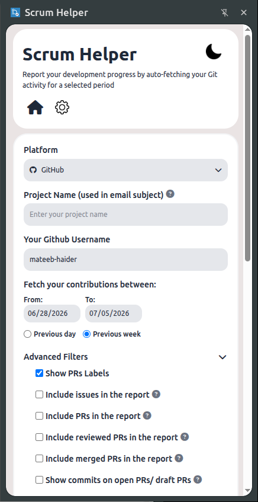
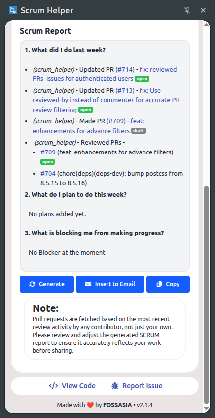
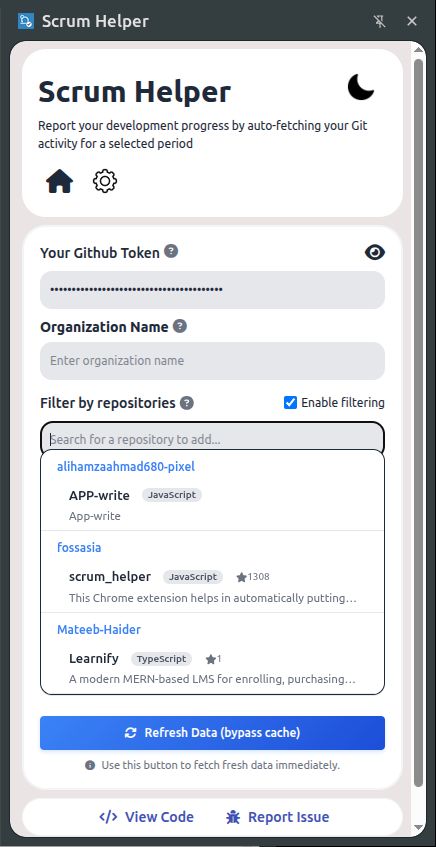

Scrum Helper connects securely to your Git activity, pulling commits, pull requests, issues, and code reviews into a structured daily update. Save hours of manual compilation.

Integrates seamlessly with your preferred provider
Set up once, automate daily. Your scrum update is three clicks away.
Log in with your username or access tokens. Token configurations are saved securely on your local device.
Pick a date range or toggle ready presets like daily updates, weekly digests, or custom sprint intervals.
Scrum Helper aggregates your data, lets you add custom remarks, and instantly copies or mails the report.
Designed for individual developers and fast-paced engineering teams.
Say goodbye to switching browser tabs to find old pull requests. Get a full list in a single click.
Deep connection with major VCS platforms like GitHub, GitLab, and Codeberg out of the box.
A lightweight, super-fast desktop app built using Tauri for native cross-platform compatibility.
Quick extension trigger right inside Chrome, Firefox, and Opera. Fully optimized for instant actions.
Tweak your generated report with inline HTML-editable text sections before copying or mailing it.
No external databases or backend clouds. Your credentials are saved entirely in your local storage shims.
Get the lightweight desktop client compiled for your specific machine.
Download the official native client installer to run Scrum Helper seamlessly in your background.
Run Scrum Helper directly inside your browser panel.
Optimized UI designed to make your development reporting effortless.

